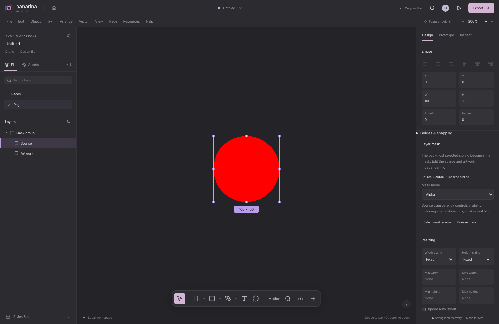
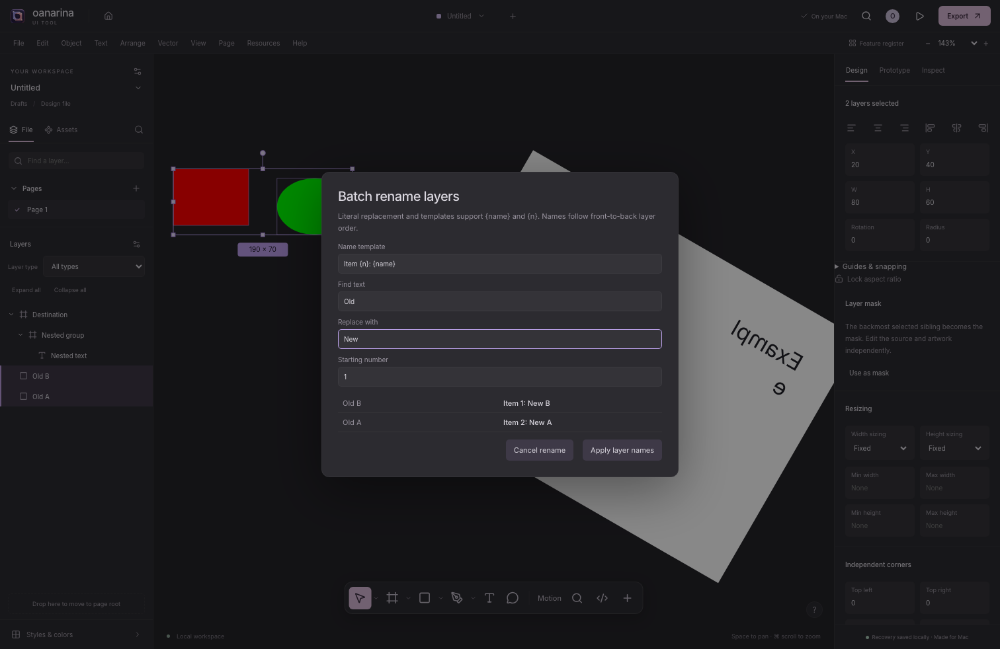

Forma guide · 0.2.0-dev.13 preview
This guide covers the Forma 0.2.0-dev.13 preview and browser demo. The current register records 1,490 implemented, 332 partial, 17 planned and 183 retired requirements, 2,022 in total across 60 categories. These are implementation statuses, not claims of complete Figma parity or completed reference verification. Search the current register or download it.
Home and the local file library
Open Home for Recent, All files, Drafts, Starred, Pinned, Archive and Trash. Search titles, filter by workspace or local folder, choose thumbnails or a list, and sort by name or dates. Flat folders are app metadata; moving a project there does not move an exported Finder file. A file’s menu supports open, rename, independent duplicate, move, star, pin, archive and Trash. Organization changes expose a session-local Home Undo, separate from editor Undo.
Import projects validates every .oui/JSON input before writing the batch. Files receive new document identities, so importing cannot overwrite the existing library original. Restore files from Trash, or explicitly confirm permanent deletion after closing them. Export backups before clearing app/browser data; this is a local library with no cloud synchronization. Organization, import limits and concurrency.
Find your place on the canvas
Use View → Previous viewport and Next viewport, or Option Command Left/Right, to revisit camera positions. History keeps up to 100 views in the current window. Nearby wheel/hand-pan changes form one gesture; explicit zoom/fit/find actions create destinations. Moving after going Back discards the forward branch. A page switch or document load starts fresh history. Camera history is temporary and does not change .oui, document Undo, recovery or the Mac dirty state; remembered page views work separately.
Find selected object on canvas, Option Command F, centers visible selected artwork using transformed bounds, including its sampled timeline position while Motion is open. It keeps the zoom for smaller selections and zooms out for larger ones, down to the existing 5% minimum. Exceptionally large selections may still extend beyond the viewport; hidden selections show a message. View and Actions also offer independent Show frame names and Show section names. These preferences persist on this device and affect only existing top-level canvas labels; nested container labels remain unfinished. Artwork and exports are unchanged.
Frame presets and inspector actions
In Assets → Frame presets, search preset names, groups or dimensions and choose a size. Watch, Paper and Presentation groups join the existing desktop, mobile and social sizes. Each creates an ordinary editable frame, fits the viewport and supports Undo and .oui saves. Watch sizes use logical interface pixels rather than physical screen resolution or guaranteed safe areas. Paper uses rounded sizes at 96 CSS pixels per inch on an RGB canvas; CMYK, bleed and physical printer calibration are separate features.
Select one frame in Design for Swap orientation, which exchanges width and height around the frame center without rotating artwork, subject to existing constraints and guards. Select frame contents selects visible unlocked direct children in front-to-back order, not every descendant; it changes selection without a document edit.
Fit frame to content remains partial. For supported ordinary free-layout frames it uses direct child rectangular bounds, including hidden children and supported transforms, while preserving descendant world geometry. It excludes stroke/effect padding and does not expand nested frame bounds for overflowing grandchildren. Auto-layout frames should use Hug contents; managed component subtrees, motion-controlled hierarchies and generated workspace frames are refused. Invalid/overflowing geometry, incompatible size limits or layout changes that would alter child artwork are refused before editing. A successful fit is one Undo step and persists in .oui. These are bounded independent controls, not verified full Figma parity.
Open a local Figma Design file
Choose File → Open project… in the browser or Mac app and select a supported .fig file. On Mac, the Open panel and Finder Open With → Forma use the same importer. Decoding runs locally in a bounded worker; the importer does not upload the source or use its thumbnail in place of the artwork. Review Figma import report after opening, then save an editable .oui copy. Imported Mac files start unsaved, and Save cannot overwrite a .fig source.
The subset includes public Design pages, supported shapes, frames and transforms, embedded static PNG/JPEG pixels, and editable text. Available supported source glyph geometry preserves untouched text appearance even when a font is missing. Editing its text, typography or layout falls back to normal editable text with available fonts; Undo can restore the outline. Main components and instances become detached editable frames with supported current values. Supported native annotation blocks use their own embedded image snapshots; their native rich-document text is not equivalently editable.
Live library/component links, complete overrides and variable modes, auto-layout behavior, prototypes, advanced paints and all Figma products are not fully preserved. Layout uses stored positions. Unsupported content produces notices or can refuse import before changing the current document. Files and converted projects must be smaller than 50 MB; each embedded raster has a 20 MB encoded limit, 8,192-pixel edge limit and 16-million-pixel surface limit, with 64 million pixels allowed across distinct embedded images in total. Browser fonts may download separately under the normal font settings. Binary .fig export and a full-fidelity round trip remain unfinished. Use the Bridge subset or SVG for return transfers. Download the import guide.
Organize and revisit pages
Right-click a page or open its Page actions menu to duplicate, rename, move or delete it. With a page focused, Up/Down/Home/End select pages, Option Shift Up/Down reorders them, and Shift F10 opens actions. Duplication gives artwork fresh internal IDs while retaining supported shared definitions. Deletion refuses surviving references. Page changes support Undo and portable saves; presentation deck pages retain their own slide controls.
Search page names filters by a case-insensitive substring without changing the canvas; Escape or Clear resets it. Ordering still follows the whole document. Each Design/Whiteboard page remembers its pan/zoom locally, and hover or keyboard focus shows a static artwork preview without switching pages. These views and search state stay outside project files and Undo.
File details and your workspace
Open File → File information… to read project facts and edit a plain-text description. Saving the description is one undoable change; Cancel discards the draft. It travels with .oui and recovery, but the Figma Bridge does not transfer it. Open the document title for local file actions; arrows, Home/End, prefix typing, Enter/Space and Escape support keyboard use.
Use Hide/Show sidebar controls or View actions to collapse and restore panels. Drag a separator, or focus it and use arrows, Shift for larger steps, Home or End. Escape cancels an unfinished pointer resize. Desired widths are remembered on this device and clamped to fit smaller windows; Reset sidebar layout restores defaults. Help → Release notes shows bundled version history rather than a silent updater.
Move artwork to another page
Select supported artwork and choose Object → Move to page…, its layer context action or Actions. Search/select the destination and confirm. Complete supported trees move with stable layer identities and supported live local links, in one Undo step. Split connections, unsafe inherited context and presentation deck pages are refused before editing. Canvas guides, comments and page settings stay on the source page; this is not an unrestricted migration of every possible component or animation context.
Responsive grid flow
Select a container and choose Auto layout → Grid. Expand Column tracks or Row tracks to choose fixed pixels, fractional fill or hug content with minimum and maximum sizes. Set gaps and padding, then select a direct child for explicit row/column placement, row/column spans and cell alignment. Automatic placement follows layer order; occupied explicit cells reserve space first.
With a grid selected, drag a track edge to preview and commit a fixed size. Focus an edge and use arrows, Shift or Option for supported increments; Escape cancels. Track edits use Undo and persist in .oui. Layout is bounded, and track reordering, cell swapping and complete Figma migration semantics remain unfinished. Track sizing and grid limits.
Mac document windows
In the native development app, creating a workspace opens a separate window. File Open accepts multiple projects; an already open path or document identity focuses its window. Native menu commands target the key document. Closing a dirty document asks Save, Cancel or Don’t Save; a failed or cancelled save does not approve closing. Reopen Closed Window and session restoration depend on available recovery or saved files.
Windows share the local library and preferences, while each owns its document state. There is no cloud merging or native document-tab system. Browser Home opens in its current editor rather than creating AppKit windows. Window lifecycle and recovery safeguards.
Design, prototypes and character formatting
The editor extends Design with editable curves and live booleans, paint/stroke/effect stacks, responsive layout, live component instances/variants, local variables/styles, guides/snapping and a motion timeline. Numeric inspector fields accept expressions such as 120 + 8 or /2; invalid expressions leave the stored value intact.
In Prototype, add ordered actions for navigation, back, HTTP(S) links, overlays, scroll-to, variant changes, variable updates and conditional branches. Author a starting flow and use Present for local playback, transitions, overlay behavior and variable-state inspection. Preview state stays separate from artwork. Hosted prototype sharing and complete nested scrolling remain absent. Prototype details and limits.
Select a text layer, open Character formatting, and select text in Rich text content. Apply formatting to that range, clear overrides or add an HTTP(S) link. Axis/feature tags require a font that supports them. Character formatting, supported rich clipboard content and Undo/Redo persist in .oui. The canvas inline editor remains plain text. Rich text guide.
Review SVGs before importing
Choose File → Place image or SVG, or drop an SVG onto the Design or Whiteboard canvas. The Import SVG dialog previews the supported editable result, dimensions, layer count and any reductions. Choose Import editable layers, Import sanitized visual asset, or Cancel SVG import. Nothing is appended until confirmation, and the whole editable import is one Undo action.
The editable subset includes shapes, paths, groups, supported text/tspan styles, local use/symbol references, supported gradients, embedded raster images and simple rectangular clips. Unsupported masks, filters, stylesheets and other content produce notices and may be omitted. The sanitized visual route also strips unsupported markup and links and may change appearance. Neither route promises a full SVG or Figma round trip. The Slides image picker currently accepts raster images. Supported input and reductions.
Reveal artwork with masks
Select unlocked sibling layers and choose Use as mask in the inspector or Object menu, or press Control Command M. The backmost selected sibling becomes the source; a multi-layer selection forms a mask group. Choose Alpha for transparency, Vector for opaque painted geometry, or Luminance for brightness and transparency. Text, image alpha, gradients, strokes and group geometry can define visible regions. Alpha masks also use the existing blur/effect renderer.
Move or resize the source and target artwork independently. Use Select mask source from a target, or Release mask to reveal concealed artwork. Edits support Undo/Redo and .oui persistence. SVG and raster exports render actual mask coverage. Layer-tree indicators show α/V/L for mask sources and a dotted circle for affected artwork; hover and accessible descriptions identify the nearest source. Mask-specific outline view, mode hover preview and exact nested Figma composition parity remain unfinished. Mask behavior and limits.

Navigate and select nested artwork
Click artwork to select its outer parent; Command-click deep-selects the hit layer, and double-click descends one owner level. With the design canvas focused, Enter selects immediate children, Shift Enter selects parents, and Tab/Shift Tab cycle siblings. Enter on text opens the inline editor. Inspector controls keep normal text editing and focus traversal.
In the Layers panel, Shift-click selects the contiguous visible range and Command-click toggles individual rows. Arrow keys navigate and expand/collapse focused tree rows. Search finds deep descendants and reveals their ancestor path. The Edit menu and action search include same-fill, same-stroke, same-text-property and same-component selection. Matching is local to the current page; mixed text ranges use exact interval/style comparison. This does not include Figma’s full structural matching or keyboard box-selection cursors. Selection behavior and keyboard details.
Organize the layer tree
Drag a layer or existing multi-selection onto the upper/lower edge of another row to reorder it, or into the middle of an ordinary container to reparent it. The page-root drop target also works as a button for the selected layers. Transformed owner changes preserve world geometry where the model can represent it; unsupported skew, locked hierarchies, managed instance children and invalid cycles are rejected before editing. Flow layout can arrange children after a drop.
Use Expand all/Collapse all, a layer-type filter, or right-click/Shift–F10 for scoped descendant controls and selection actions. Batch rename… previews literal find/replace and templates containing {name} and {n}; Apply changes the selection in one Undo step. In the layer tree, Shift selects visible ranges and Command toggles rows. Keyboard drag-and-drop, hover expansion and large-tree virtualization remain separate work. Structural editing and safeguards.

Drag the rotation handle to rotate a selection; hold Shift to use the chosen rotation snap increment. Lock aspect ratio persists on each layer and constrains width/height edits and pointer resizing. Mixed selections retain each locked layer’s own ratio. Hold Option while resizing to grow around the same world center, including under supported transformed parents.
A single child’s alignment buttons use its parent axes; multiple selected roots normally use world-space selection bounds. Hold Shift on an alignment button, or use an explicit parent-alignment command, to align sibling groups to their own parents while preserving group spacing. Distribution uses selection bounds. Flow-managed children use their parent’s layout controls; unsupported affine skew is rejected atomically. These controls do not establish every Figma scale or snapping behavior. Canvas transforms and current limits.
Set local defaults and navigation
Open File → Preferences… or press Command ,. Customize small/large nudge steps, Shift-rotation increments, drawing-tool retention, hover and selection dimensions, wheel zoom speed/direction, and optional right-button panning. Right-button pan replaces the ordinary right-click menu; Control-click remains a context-menu route. Set new frame/shape fills and strokes, plus text color/family/size/weight/style/line height. Interface appearance can follow the system light/dark choice or retain Light/Dark. Interface motion offers Follow system, Reduce and Allow for scoped editor chrome; intentional artwork playback and exports retain their own settings.
Changes save immediately outside .oui files and affect new artwork rather than existing layers. Templates and explicit insertion values take precedence. The native app and browser use separate local settings. Reset restores defaults without changing projects; storage failures are reported. Choosing a font default does not install that font. Preference values and limits.
Search actions and registered tools
Open Actions with Command K, Command / or the header search button. Search command/tool names, IDs, categories, shortcuts or supported related words, then filter by category. While the search field stays focused, arrows move through results, Home/End choose the first/last, Enter runs the selected result and Escape closes. Ordinary text-selection shortcuts still work, and Tab stays within the dialog.
The latest 20 distinct command IDs are kept locally, including invocations through menus and shortcuts. They contain no project names, content or paths. The Recent category narrows history; Clear recent actions removes it without changing project files. This searches registered editor actions and tools, not external plugins or every library asset. Palette behavior and storage.
Whiteboard
Choose File → New whiteboard. Add notes with local author labels, shapes/text, sections, connectors, tables and mind maps. Connector labels, routes and arrowheads follow connected objects. Marker/highlighter ink, whole-stroke erasing, stamps and a temporary laser pointer are available. Set a local timer or a named local voting session; participant names are local labels. Undo, editable .oui files, image import, local comments and artwork exports use the shared editor. This is not a multiplayer service. Whiteboard tools and limits.
Slides
Choose File → New presentation. Add a blank, title, section, image or grid slide; reorder thumbnails, duplicate/delete slides and choose one of four themes. Edit text and shapes, place local images/components, change aspect ratio, and add notes or local comments. Command-D duplicates a selected layer inside the current slide; copy and paste place it relative to another slide’s frame.
Presenter view shows notes, the next slide and a timer. Audience view hides notes; both views use the current app window. Arrows, Page Up/Page Down, Home/End and Space navigate; B toggles a black screen and Escape exits. Hidden slides are skipped. Export the current PNG, all visible PNGs as a ZIP, or a PDF with rasterized slide artwork. Notes/comments are excluded. Deck exports support up to 200 visible slides and expose progress/cancellation. PowerPoint, live polls, cloud collaboration and a separate audience window remain unfinished. Slides guide and export limits.
Fonts and portable files
The catalog retains 1,959 Google families and 24 offline open-license families. Seventeen bundled families include genuine italic files. Search/filter, preview weights/italic, keep Google favorites, or import licensed TTF/OTF files. The Mac installed-font list uses fonts already on that Mac; proprietary font binaries are not bundled. Use Resolve missing fonts to audit and replace missing families across text layers, character ranges and local styles, with Undo.
Explicit .oui/SVG exports embed available used weight/style/script font files when embedding permissions allow. Installed proprietary files and restricted imported fonts are excluded. Saves exceeding 50 MB after embedding fail before writing; reduce embedded images or split the document. Missing-family detection is not a complete glyph/weight/axis audit. Fonts, licensing and offline limits.
Canvas backgrounds
Clear the selection on a Design or Whiteboard page and open Page in the right inspector. Set Canvas color with the picker or a six-digit hex value, change Canvas background opacity %, or turn Show background off. Use theme background removes the override and follows the current light or dark theme. These page edits support Undo/Redo and persist in .oui.
This is the canvas backdrop only. Frame fills, prototype backgrounds and artwork exports retain their own settings; the page backdrop is not painted into an SVG or PNG export. The Figma Bridge exchanges a supported single-solid page background, including opacity and visibility, through the public API. Other page paints are reported and omitted. Theme-following pages use the destination default. This new bridge path has API-contract checks; actual Figma desktop acceptance is still pending.
Check a color pair
Select artwork and open Color contrast checker in the right inspector. Enter six-digit Foreground and Background colors and a foreground opacity. Select one layer with exactly one visible solid paint to use Use selected paint or Use as background. The foreground button copies paint opacity; the background button treats the copied color as opaque.
The checker shows the ratio and normal/large-text AA and AAA thresholds, using the full ratio before rounding. It checks an explicit pair, not the rendered canvas: page backgrounds, group opacity, blends, effects, strokes and rich character ranges are not sampled. The values are session-local helper inputs and do not alter artwork or certify a design’s accessibility. Read the WCAG contrast guidance.
Copy editable layers between Mac windows
In Forma for Mac, select artwork and use the native Edit menu, editor/layer menus, Actions palette or Command C, Command X and Command V. Focused text fields keep normal text editing. Copy writes editable Forma layers, an SVG representation and selected plain text to the Mac pasteboard. It includes the selected artwork’s necessary definitions, not the entire project, unrelated artwork, comments or document paths. Cut removes artwork only after a successful pasteboard write; changing the document, page or selection during the write cancels removal.
Pasting into another document makes independent copies with fresh IDs, preserves supported world geometry with a 24-point offset, and adds required component mains on a Pasted component dependencies page. Available styles, variables, guides, embeddable used font faces and self-contained whiteboard records travel with the artwork. Instances link to the copied local mains; there is no live link to the source document. A same-session copy can retain existing definitions when it exactly matches the successful local Copy. Each paste is one undoable edit and persists when you save .oui.
External SVG opens the existing import review on the Design canvas; ordinary SVG-looking text stays text. Plain text becomes an editable text layer. Malformed Forma clipboard data is rejected before changing the destination. Transfers are bounded to 20 MB and 20,000 copied layers including dependencies, with a 50 MB destination-project limit and 100,000 characters for plain text. Missing definitions, conflicting embedded faces, unsupported skew, locked/managed destinations or expired large operations can reject safely. Copy fewer layers or use .oui for a larger transfer.
The browser demo keeps its renderer-local design clipboard. This native path does not implement Figma’s private editable clipboard or a browser-system editable-layer clipboard. Timelines, comments, page backgrounds and references outside the copied closure are not transferred; variable/conditional prototype actions are omitted. Cutting a main still referenced by surviving instances or controls is refused. There is no automatic pasteboard monitoring.
Mac image paste and Copy as PNG
In the native Mac app, Command V can paste PNG or TIFF data from another app as embedded pixels in an editable image layer, including inside the active slide. TIFF uses its first oriented frame. Paste is one undoable edit and survives .oui save/reopen. Images are limited to 20 MB encoded data, 8,192 pixels per edge and 16 million pixels; resize larger images before copying.
For a transparent 2× snapshot of selected artwork, choose Edit → Copy as PNG or Shift Command C. It uses the same pixel limits and does not create an Undo entry. Other apps can paste the exported PNG representation. The browser points to image file export; browser/Windows system-image clipboard behavior is unfinished.
Figma interchange
Use SVG for visual exchange or download the current Figma Bridge for its supported editable .oui subset. Unzip it, then in Figma desktop choose Plugins → Development → Import plugin from manifest and select its manifest.json. Run Oanarina Bridge, export a selection/page/all pages, or import a saved .oui to add new editable pages. Read the transfer report. Account or organization policies may restrict development plugins. Full public bridge guide · ZIP checksum.
Supported component transfers include needed cross-page main/variant definitions on a dependency page, linked instances with proven child correspondence, supported explicit overrides and single-target text/boolean/instance-swap controls. Import creates definitions before instances and uses actual native variant sets/property IDs. Unoverridden supported fields remain inherited. Ambiguous structures, nested swaps or missing mains may become independent editable appearance, with a report. IDs, references, ownership and cycles are validated before import; a failed operation rolls back newly created pages.
This is a bounded conversion contract. Slots, exposed nested controls, preferred-value suggestions, published-library identity, root/multi-target bindings, full variables/reactions, rich character ranges and arbitrary font axes are outside it or reduced. Variant defaults and some gradients/layout/effects can differ. New component and page-background paths have strict API-contract mock coverage; those mocks are not real Figma acceptance. Older synthetic fixtures ran through the connected Plugin API for shape/text/prototype paths. The attempted real component check was blocked by the service’s tool quota before any content operation. Actual desktop component/background acceptance and a full-fidelity round trip remain unverified. Local binary .fig Design import is a separate supported subset, described above. Binary .fig export remains absent. The bridge in archived section 7 is the older v0.1.0 download.
Canvas overview, text search and frame delivery
The dev.12 preview adds the controls below. Overflow inspection and saved frame export profiles remain partial, with the scope documented in each section. Read the preview change notes.
Canvas scrollbars and schematic overview
Use View → Show canvas scrollbars and Show overview minimap, or find the commands in Actions. Both default to hidden and persist independently on this device. Drag a scrollbar thumb, click its track, or use arrows, Page Up/Down and Home/End. Shift-arrows move by most of a viewport. The overview supports click-to-center, dragging the visible viewport, arrows and Home to center artwork or the empty canvas origin. Camera Back/Forward shortcuts continue to work while the controls are focused.
Escape, pointer cancellation, window blur, resize or hiding a navigator cancels its drag. Page changes, same-file reopening and newer camera commands invalidate obsolete gestures. These controls do not edit artwork, add document Undo steps or mark a Mac project dirty. The minimap is a schematic of visible transformed layer bounds, including sampled motion. It is not an image thumbnail: text shaping, stroke/effect expansion, precise rotated clipping and mask pixels are not reproduced. Up to 1,500 outlines are drawn while valid bounds across the 20,000-layer page limit contribute to navigation; invalid or excessive world geometry is skipped or reported.
Find and replace text
Choose Text → Find and replace text…, use Actions or press Command F. Search the current page, the whole file, or the selected layer trees captured when the dialog opens. Case matching, whole-word boundaries and hidden-layer inclusion are available. Reveal a result to select it on its page or slide. Searching and revealing do not change saved artwork.
Replace one match or all editable matches in one Undo transaction. Surrounding rich formatting is retained; inserted text inherits the first matched character’s formatting. Inherited locks remain read-only, and managed values that would overwrite the requested replacement are refused atomically. Main-component edits can update their instances. Close Motion before replacing: this searches literal base text, not generated motion-keyframe text.
This is literal search, without regular expressions or complete language-specific word breaking. Queries are limited to 512 UTF-16 units, replacement strings to 100,000, results to 10,000 and aggregate replacement growth to one million units. Refine a capped search before Replace All. Results display 100 at a time; the existing 50 MB project ceiling still applies. A focused text draft is committed before Command F opens the dialog. Escape closes it and returns focus to the canvas.
Inspect potential frame overflow · partial
Select one frame in Design and expand Inspect frame overflow. The static preview disables only that frame’s clipping; its saved clip value and artwork remain unchanged. While Motion is open, inspection uses the currently sampled artwork. A dashed rectangle marks the selected frame, and potential overflowing descendants can be selected from the list or together.
The list uses conservative rectangular bounds with stroke/effect padding. Nested clips, masks, rounded paths, empty containers and occlusion can conceal a listed candidate. This remains partial: the list is not a pixel visibility proof or automatic repair. It displays at most 100 candidate rows while Select includes all candidates. Unsupported collapsed/nonfinite transforms or hierarchies beyond 256 levels produce a message. Read-only inspection and selection do not dirty the file or create document Undo entries.
Default prototype starting frame
Select an eligible outer frame and use Prototype starting point → Set as default prototype start in Design or Prototype. The action reuses that frame’s first existing flow, preserving its identity, name and description, or creates one if needed; other flows remain. The first flow becomes the presentation default when no selected artwork chooses another screen. Undo/Redo and .oui saves retain the change. Present from this frame opens the actual viewer without editing artwork or adding an interaction.
Visible ordinary outer frames inside groups or sections are eligible if they have no containing frame. Hidden ancestors, managed instance children, generated slide/sticky/table frames and excessive hierarchies are refused. Changing the default requires an unlocked hierarchy; read-only presentation is available for locked artwork. Existing unsupported saved targets remain visible rather than being silently replaced. Slides retain their own presentation controls.
Saved frame export profiles · partial
Select a frame and use Frame export settings in Design or the main Export dialog. Both edit the same .oui data. An untouched frame shows a default SVG/1×/frame-bounds row without changing the project. Add or remove up to 20 rows, choose SVG/PNG/JPG and 1×–4× scale, set a filename suffix, choose frame or artwork bounds, and optionally include layout guides. Profile edits support Undo/Redo and are validated before document mutation; inherited locks and managed instance children protect editing.
Export each row individually. Frame bounds remove the selected frame’s world rotation/scale and crop to its authored rectangle; artwork bounds retain the existing world-oriented visual-bounds behavior and current clipping. PNG preserves transparency; JPG composites onto white. Raster output is limited to 16,384 pixels per side and 80 million actual rounded pixels. The export snapshots its source before asynchronous rendering, so switching projects cannot retarget a pending export.
Profiles remain partial: PDF, width/height resolution constraints, advanced color/export options, batch execution and complete Figma export parity are unfinished. Profile transfer through the Figma Bridge or binary .fig export is not claimed. Return to the next development overview.